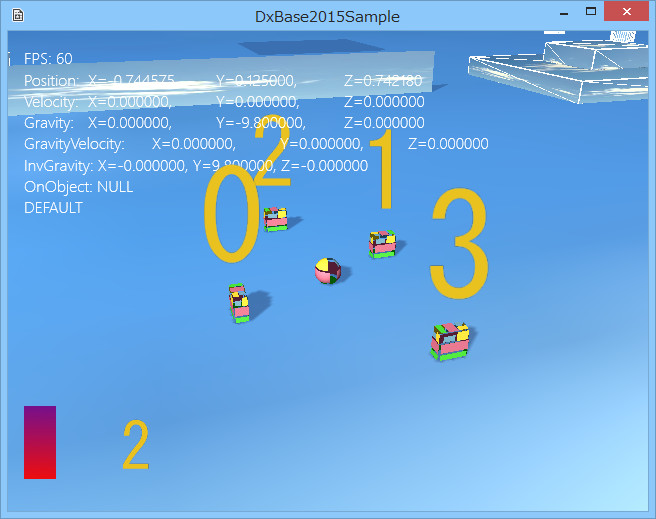

図3001a
まず、左下のバーと数字がスプライトです。カメラを変化させてもそこから動きません。
//初期化
void NumberSprite::Create(){
//中略
//スプライトをつける
auto PtrSprite = AddComponent<Sprite>(Color4(1.0f, 1.0f, 1.0f, 1.0f));
PtrSprite->SetTextureResource(L"NUMBER_TX");
//1メートル当たりのピクセル数
//以下は640*480ピクセルの場合。横幅20,縦15メートルということ
PtrSprite->SetPixelParMeter(32.0f);
//透明処理
SetAlphaActive(true);
//中心原点
PtrSprite->SetCoordinate(Sprite::Coordinate::m_CenterZeroPlusUpY);
//各数字ごとにUV値を含む頂点データを配列化しておく
for (size_t i = 0; i < 10; i++){
float from = ((float)i) / 10.0f;
float to = from + (1.0f / 10.0f);
vector<VertexPositionColorTexture> NumVirtex =
{
//左上頂点
VertexPositionColorTexture(
Vector3(-0.5f, 0.5f, 0),
Color4(1.0f, 1.0f, 1.0f, 1.0f),
Vector2(from, 0)
),
//右上頂点
VertexPositionColorTexture(
Vector3(0.5f, 0.5f, 0),
Color4(1.0f, 1.0f, 1.0f, 1.0f),
Vector2(to, 0)
),
//左下頂点
VertexPositionColorTexture(
Vector3(-0.5f, -0.5f, 0),
Color4(1.0f, 1.0f, 1.0f, 1.0f),
Vector2(from, 1.0f)
),
//右下頂点
VertexPositionColorTexture(
Vector3(0.5f, -0.5f, 0),
Color4(1.0f, 1.0f, 1.0f, 1.0f),
Vector2(to, 1.0f)
),
};
m_NumberBurtexVec.push_back(NumVirtex);
}
}
void NumberSprite::Update(){
//前回のターンからの時間
float ElapsedTime = App::GetApp()->GetElapsedTime();
m_TotalTime += ElapsedTime;
size_t Num = (size_t)m_TotalTime;
Num = Num % 10;
auto PtrSprite = GetComponent<Sprite>();
PtrSprite->UpdateVirtexBuffer(m_NumberBurtexVec[Num]);
}
//初期化
void BarSprite::Create(){
//中略
//原点左下
PtrSprite->SetCoordinate(Sprite::Coordinate::m_LeftBottomZeroPlusUpY);
vector<VertexPositionColorTexture> Virtex =
{
//左上頂点
VertexPositionColorTexture(
Vector3(-0.5f, 4.0f, 0),
Color4(1.0f, 1.0f, 1.0f, 1.0f),
Vector2(0, 0)
),
//右上頂点
VertexPositionColorTexture(
Vector3(0.5f, 4.0f, 0),
Color4(1.0f, 1.0f, 1.0f, 1.0f),
Vector2(1.0f, 0)
),
//左下頂点
VertexPositionColorTexture(
Vector3(-0.5f, 0.0f, 0),
Color4(1.0f, 1.0f, 1.0f, 1.0f),
Vector2(0, 1.0f)
),
//右下頂点
VertexPositionColorTexture(
Vector3(0.5f, 0.0f, 0),
Color4(1.0f, 1.0f, 1.0f, 1.0f),
Vector2(1.0f, 1.0f)
),
};
PtrSprite->UpdateVirtexBuffer(Virtex);
}
void BarSprite::Update(){
//前回のターンからの時間
float ElapsedTime = App::GetApp()->GetElapsedTime();
m_LastTime -= ElapsedTime;
if (m_LastTime < 0.0f){
m_LastTime = m_MaxTime;
}
float BarVirtexHeight = m_LastTime * 4.0f / m_MaxTime;
float UVHeight = 1.0f - (m_LastTime / m_MaxTime);
auto PtrSprite = GetComponent<Sprite>();
vector<VertexPositionColorTexture> Virtex =
{
//左上頂点
VertexPositionColorTexture(
Vector3(-0.5f, BarVirtexHeight, 0),
Color4(1.0f, 1.0f, 1.0f, 1.0f),
Vector2(0, UVHeight)
),
//右上頂点
VertexPositionColorTexture(
Vector3(0.5f, BarVirtexHeight, 0),
Color4(1.0f, 1.0f, 1.0f, 1.0f),
Vector2(1.0f, UVHeight)
),
//左下頂点
VertexPositionColorTexture(
Vector3(-0.5f, 0.0f, 0),
Color4(1.0f, 1.0f, 1.0f, 1.0f),
Vector2(0, 1.0f)
),
//右下頂点
VertexPositionColorTexture(
Vector3(0.5f, 0.0f, 0),
Color4(1.0f, 1.0f, 1.0f, 1.0f),
Vector2(1.0f, 1.0f)
),
};
PtrSprite->UpdateVirtexBuffer(Virtex);
}
void NumberSquare::Create(){
if (!m_SeekObject.expired()){
//中略
//変更できるスクエアリソースを作成
m_SquareMeshResource = CommonMeshResource::CreateSquare(1.0f, true);
}
}
void NumberSquare::Update(){
if (!m_SeekObject.expired()){
auto SeekPtr = m_SeekObject.lock();
auto SeekTransPtr = SeekPtr->GetComponent<Transform>();
auto PtrTransform = GetComponent<Transform>();
auto Pos = SeekTransPtr->GetPosition();
Pos.y += 0.75f;
PtrTransform->SetPosition(Pos);
PtrTransform->SetScale(1.0f, 1.0f, 1.0f);
auto PtrCamera = GetStage()->GetCamera(0);
Quaternion Qt;
//向きをビルボードにする
Qt.Billboard(PtrCamera->GetAt() - PtrCamera->GetEye());
//向きをフェイシングにする場合は以下のようにする
// Qt.Facing(Pos - PtrCamera->GetEye());
//向きをフェイシングYにする場合は以下のようにする
// Qt.FacingY(Pos - PtrCamera->GetEye());
//向きをシークオブジェクトと同じにする場合は以下のようにする
// Qt = SeekTransPtr->GetQuaternion();
PtrTransform->SetQuaternion(Qt);
vector<VertexPositionNormalTexture> BackupVec;
//リソースのバックアップをコピー
//std::は必要ないが、確認のため記述
std::copy(
m_SquareMeshResource->GetBackupVertices().begin(),
m_SquareMeshResource->GetBackupVertices().end(),
back_inserter(BackupVec)
);
//上記は以下のようにも書ける
//for (size_t i = 0; i < m_SquareMeshResource->GetBackupVertices().size(); i++){
// BackupVec.push_back(m_SquareMeshResource->GetBackupVertices().at(i));
//}
//UV値の変更
float from = ((float)m_Number) / 10.0f;
float to = from + (1.0f / 10.0f);
//左上頂点
BackupVec[0].textureCoordinate = Vector2(from, 0);
//右上頂点
BackupVec[1].textureCoordinate = Vector2(to, 0);
//左下頂点
BackupVec[2].textureCoordinate = Vector2(from, 1.0f);
//右下頂点
BackupVec[3].textureCoordinate = Vector2(to, 1.0f);
//変更した頂点にアップデート
m_SquareMeshResource->UpdateVirtexBuffer(BackupVec);
}
}
//向きをビルボードにする
Qt.Billboard(PtrCamera->GetAt() - PtrCamera->GetEye());